Taga, Shiga: things to do, food and stays
Taga · Shiga
Taga
Highlighted on the Shiga map.
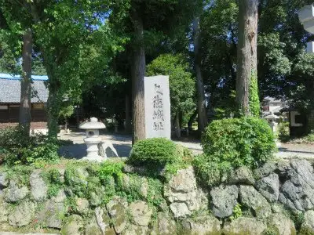
Stay
多賀さとの宿 一圓屋敷
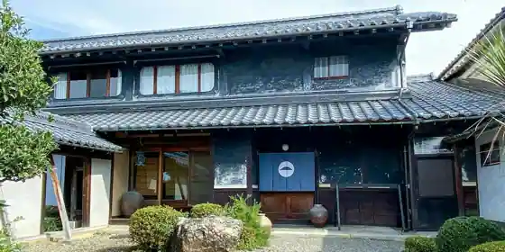
Taga Satono Yado Ichien Yashiki
レストイン多賀
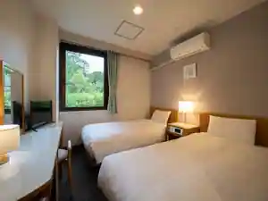
Resutoin Taga
Inn in Toshimantera, Taga with a large communal bath.
Dining
糸切餅 元祖莚寿堂本舗
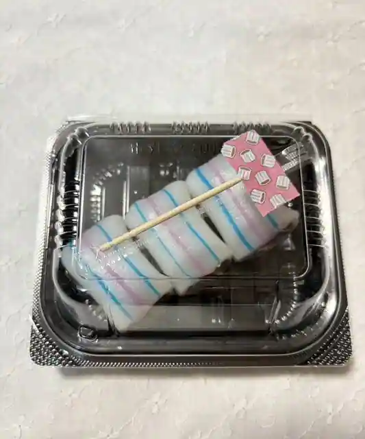
Itokiri Mochi Ganso Mushiro Hisashi Domoto Ho
糸切餅総本家 多賀や
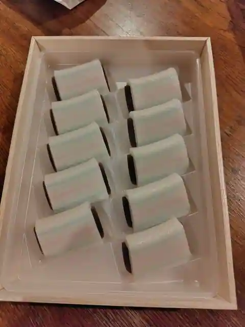
Itokiri Mochi So Honke Taga Ya
そば吉
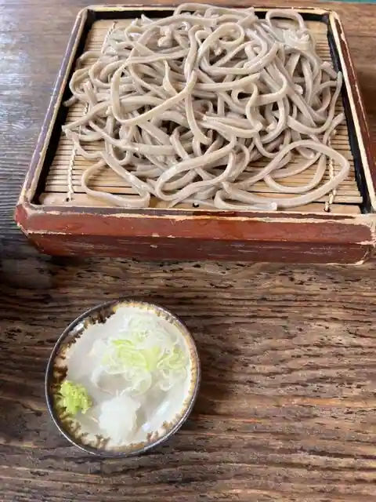
Soba Kichi
一休庵 柏葉 多賀店
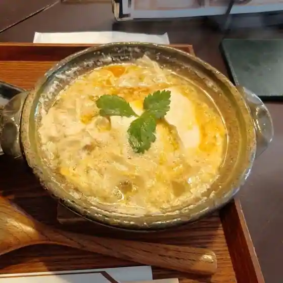
Ikkyu Iori Kashiwaba Taga
多賀サービスエリア（上り）スナックコーナー
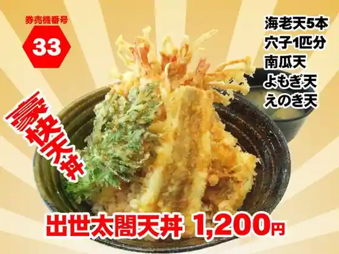
Taga Sabisueria (Nobori) Sunakkukona
近江ノ國のおだいどこ
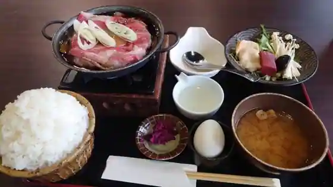
Omi No Kuni Nodaidoko
奥山の癒し処 風緑
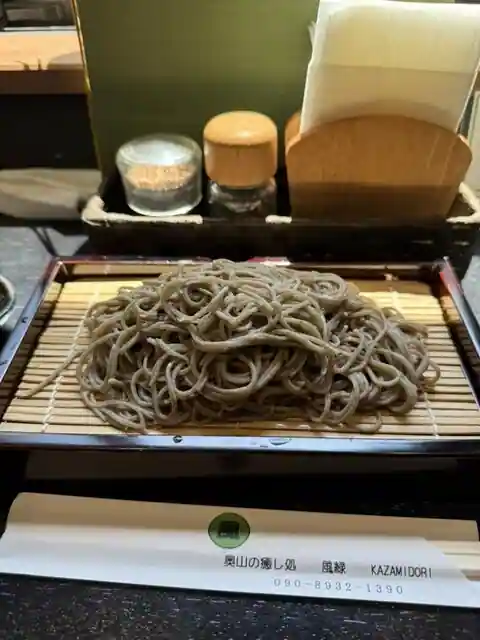
Okuyama No Iyashi Tokoro Kaze Midori
岩﨑珈琲店 パンと珈琲直売所
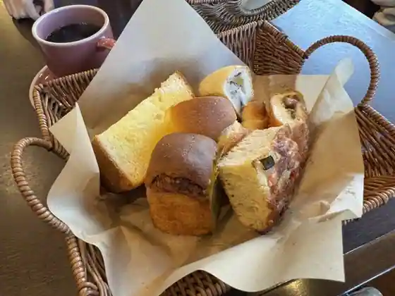
Iwa Iwa Coffee Bakery To Coffee Chokubai Tokoro
寿命そば
Jumyo Soba
六角
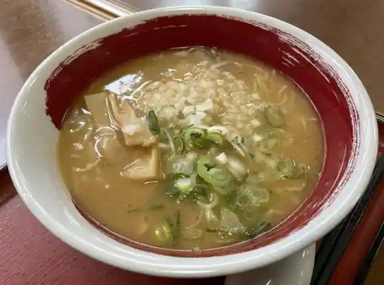
Rokkaku
天の伊吹
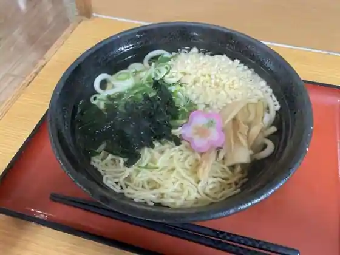
No Ibuki
本格炭火焼き う処 みず長
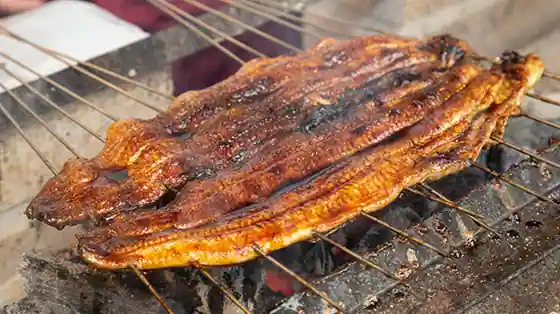
Honkaku Sumibi Yaki U Tokoro Mizu Cho
でり家 多賀サービスエリア(上り線)店
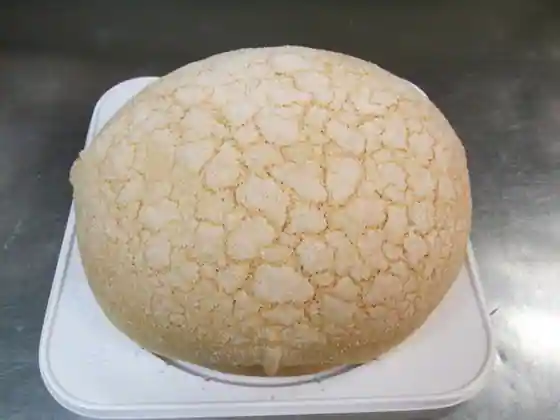
Deri Ie Taga Sabisueria (Nobori Sen)
湖菜キッチン DON丼
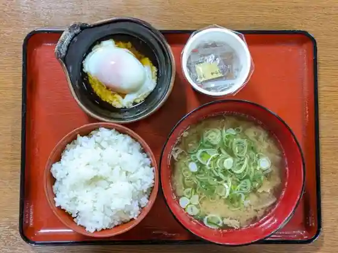
Mizumi Na Kitchen DON Donburi
パティスリーカフェ トッペン
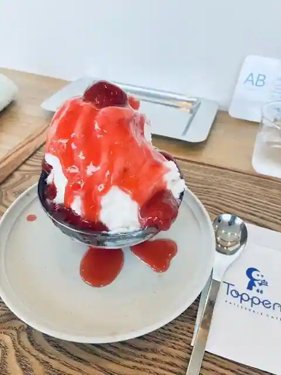
Pateisuri Cafe Toppen
めん・どん家
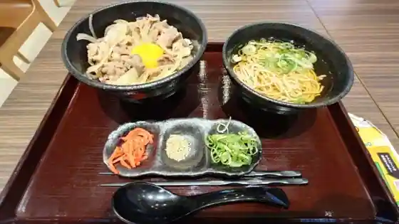
Men Don Ie
藝や cafe
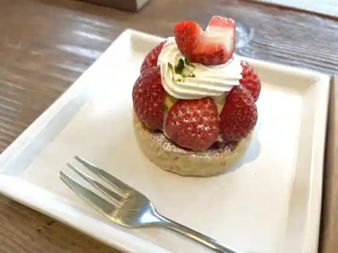
Gei Ya cafe
彦根イイプリン 多賀サービスエリア店
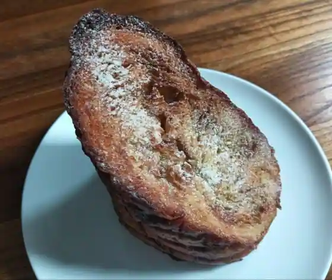
Hikone Ipurin Taga Sabisueria
近江ちゃんぽん亭 エクスパーサ多賀店
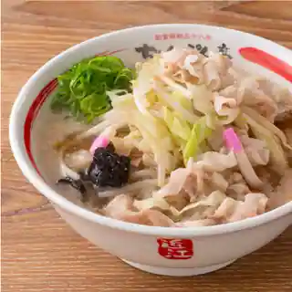
Omi Chanpon Tei Ekusupasa Taga
えびせんべいの里 EXPASA多賀店
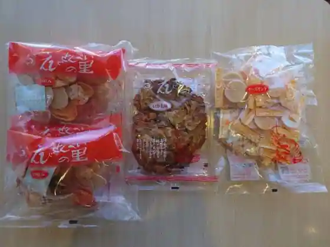
Ebisenbeino Sato EXPASA Taga
不二家
Fujiya
愛彩
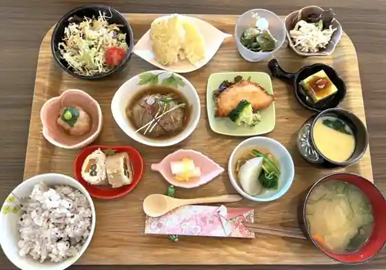
Ai Sai
牡丹
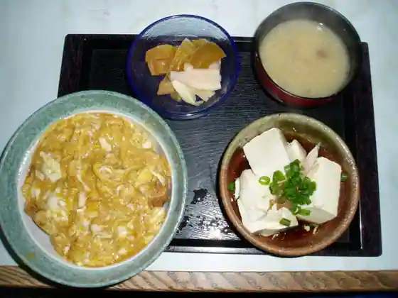
Botan
きっちんににぎ エクスパーサ多賀店
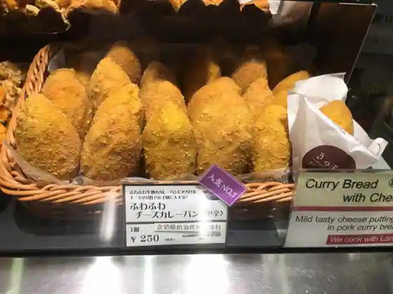
Kitchinninigi Ekusupasa Taga
Sights
Kagi Ro
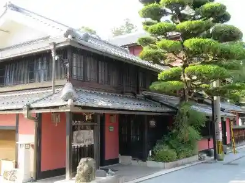
Ido Shrine
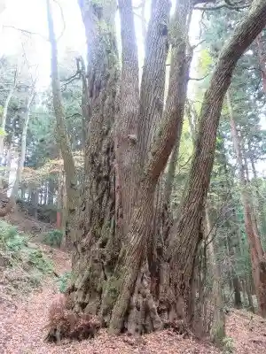
Ko Miya Shrine
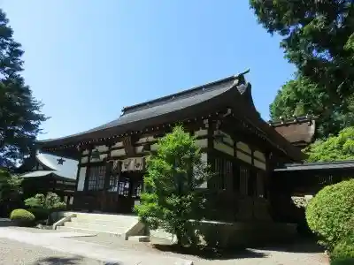
Shinnyo Tera
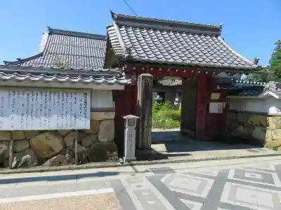
Akebo no Park Taga
Asutoro Park Ten Kyu Kan
Otaki Shrine
Kirimbiiru Shiga Kojo / Kirimbibarejji Shiga Kojo
Taga Taisha
Kawauchi no Kazana
Takatori Yama Fureai Park
Otaki no Tsuriba
Kyutoku Joshi
Taka Gen Tera
Enmei Jizo Mikoto
Narasaki Burial Mound
Iimori Ki
Ooka Burial Mound
Taga Taisha Omotesando Ema Tori
Inukami Shrine (Taga)
Omitetsudo Taga Taisha Zen'eki
Jube Yashikiato
Ketsu I no Mori Park
Taga Town Hall